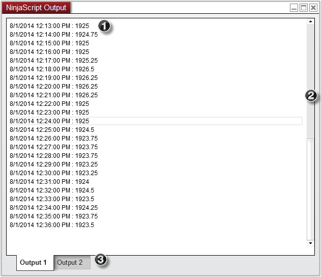
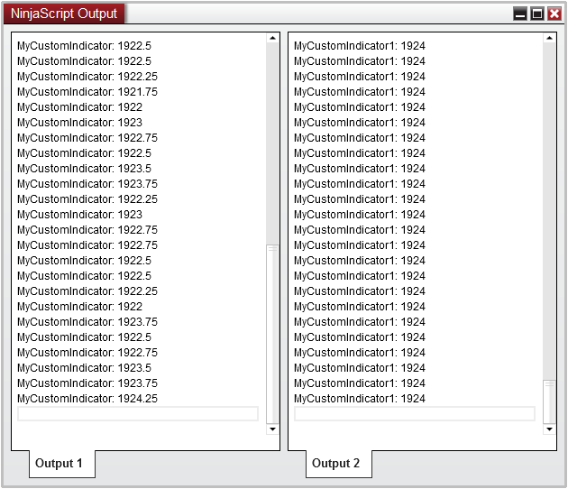
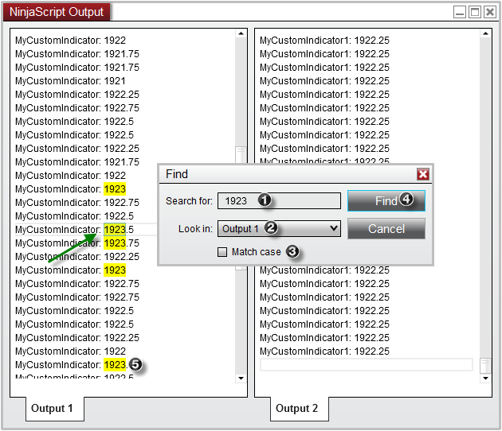
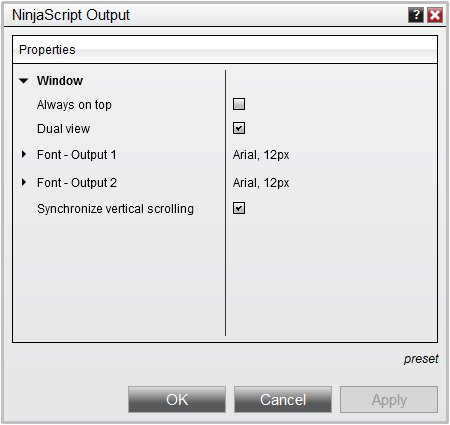
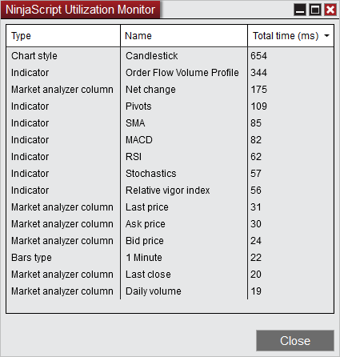

|
<< Click to Display Table of Contents >> Output Window |


|
Output Window
|
<< Click to Display Table of Contents >> Output Window |
|
The NinjaScript Output is a powerful debugging tool which can be used to further analyze valuable information generated by your NinjaScript files. The Output window will only display data when other debugging methods such as the Print() or TraceOrders (for strategies) have been configured in a custom script.
You can open the NinjaScript Output window by going to the New menu, and selecting NinjaScript Output
 Understanding the Output window display
Understanding the Output window display
Display Overview

Right click menu
|
 Understanding the dual tab view
Understanding the dual tab view
Dual viewYou can optionally split the Output window tab's into a dual view which will allow you to view both outputs windows at the same time. To enable this feature, simply right click on the Output window and select Dual viewIn the image above, we have enabled the dual view mode where we can see the output from two separate indicators. MyCustomIndicator is programmed to print to the Output 1 tab, while MyCustomIndicator1 is programmed to print to the Output 2 tab. (Please see the Help Guide article on the PrintTo() method for more information on programming a custom script to print to a second output tab)Synchronized ScrollingWhile the Output window is in Dual view mode, each output window will have an independent scroll bar which allows you to navigate each output tab separately. However if desired, you can synchronize the vertical scrolling between these two windows which will allow you to easily compare the output from two difference scripts where both tabs will scroll up/down equally at the same time.
To enable this feature, right click on the Output window and select the Synchronized Vertical Scrolling menu item. |
Using the Find ToolIf you would like to search for a specific value or text displayed in your Output window, you can use the Find tool to both highlight and navigate any terms that match your search.
To search for a specific term: 1. Enter the text/value you wish to search for 2. Specify which Output tab you would like to search 3. Optionally check Match case to only look for terms which contain the exact text case of your term (i.e., Close would not be the same as close) 4. Select the Find button which will navigate to and highlight the next matching term (indicated by the green arrow in the image below) 5. The search will also highlight any other matches in the output window that match the search
Selecting the Find button again will continue to search through the Output window and will highlight the next match.
 Tip: Without the Find tool, you can also highlight terms simply by double clicking on the text in the output window. Doing so will automatically search the highlighted term and highlight all results. |
 Clearing and saving output information
Clearing and saving output information
Clearing Output InformationAfter some time, you may feel the need to erase all the current information in the current output tab. To do so, simply right click on the current output tab and select "Clear".
Saving Output InformationIf you would like to save the current results of your output, you can right mouse click on the desired output tab and select "Save As". Doing so will provide you with a Save As dialog window which will allow you to save your output in a Text (.txt) file at any location on your computer. |
The following properties are available for configuration within the NinjaScript Output properties window: 
|
 NinjaScript Utilization Monitor
NinjaScript Utilization Monitor
The NinjaScript Utilization monitor is opened via a right click in the NinjaScript Output window and will be mainly used as a diagnostic tool for performance issues.
It will track any NinjaScript objects total resource time from the moment the window was opened:
•NinjaScript Utilization monitor window will not be saved in any workspace file •NinjaScript Utilization monitor window works across all workspaces using a single window instance •NinjaScript Utilization monitor window will work even if hidden / non-visible
When using it as debugging aid, it's recommended to focus on the top resource using NinjaScript's, while absolute total time is negligible.
Also it's important to understand that a resource heavy NinjaScript could be meaning:
a) the NinjaScript may not be coded as efficiently as possible and would be worthwhile to review if everything has been done to achieve optimal performance b) it could be doing intense / steady calculations by design and a higher than average resource use therefore could likely not be avoided.
It should be thought of a gauge to see where likely performance / code optimization time is likely most wisely spend if the overall performance footprint is to be reduced.
Our support team is trained with this process and is available to assist.
 |